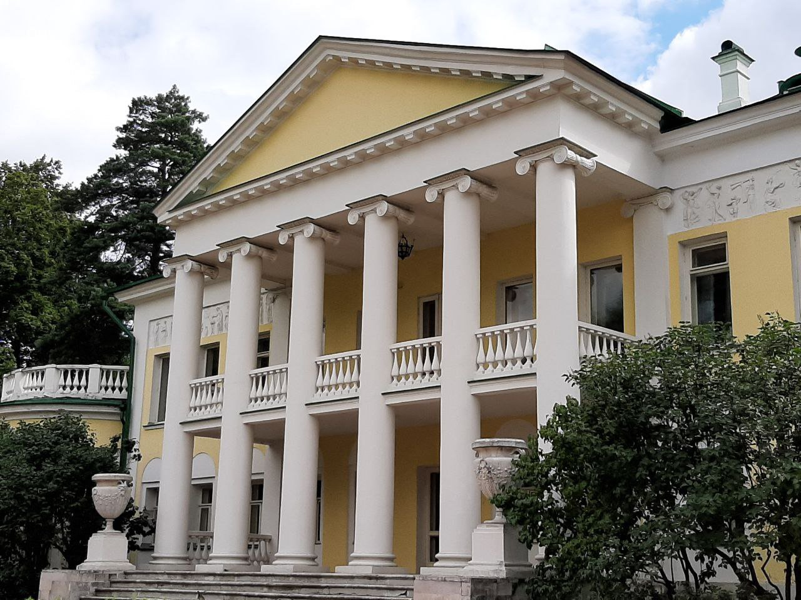
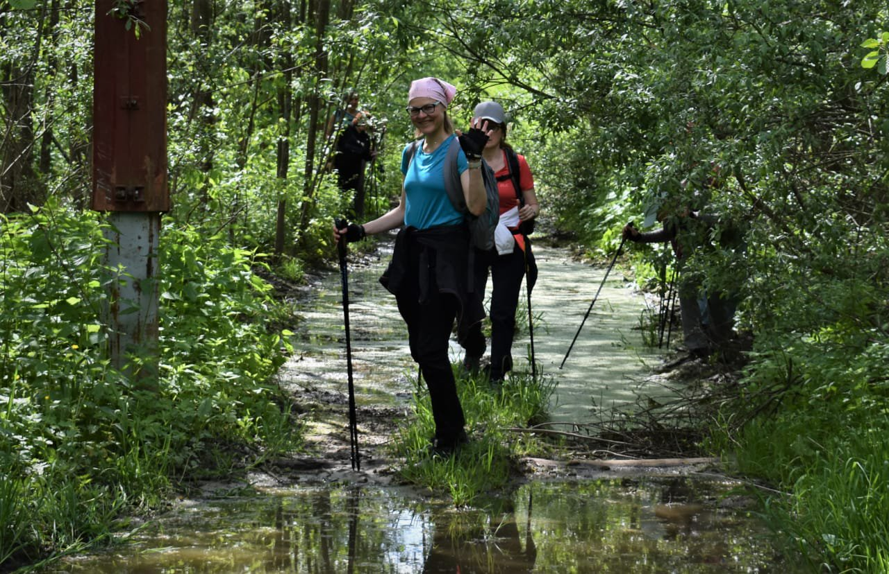

Сканди-мероприятия
-
Дорога в Лавру ч.6. Радонеж - Абрамцево - Хотьково
26 августа 2023г
В субботу, 26 августа, нас ждёт очередной, шестой, отрезок пути из Москвы в Троице-Сергиеву Лавру. Этап за этапом, мы проходим маршрут длиною в 120 км. В этот раз наша цель - пройти всего лишь 12 км В спокойном темпе проходится легко.
В Абрамцево у нас запланрована экскурсия с посещением Усадебного дома, Кухни, Студии-мастерской, бани-Теремка, Церкви Спаса Нерукотворного, Поленовской дачи и экспозиции "Абрамцево. Искусство XX века". А также мы прогуляемся по парку, отдохнем и перекусим.
Идем в субботу, 26 августа 2023г.. Начало в 9:00
Сергий Радонежский – один из самых почитаемых святых на Руси. А с конца XIV в., основанный им, Троицкий монастырь стал центром паломничества. Совершать паломничество в Троицкую обитель стало традицией, как у простого люда, так и у знатного. Причем проделать путь до монастыря надо было обязательно пешком.
Мы разделили дорогу на несколько этапов. На этот раз пойдем от станции Радонеж до станции Хотьково. По пути посетим с экскурсией Усадьбу Абрамцево. Маршрут очень живописный и интересный и совсем несложный.
На территории музея есть небольшой кафетерий и чайная зона на улице рядом с роскошным многовековым дубом. Здесь полноценного обеда нет в продаже, поэтому берём с собой перекус. Во время прогулки сделаем разминку, суставную, дыхательную и нейрогимнастику, упражнения на различные группы мышц и технику скандинавского шага, в завершении обязательная растяжка.
Одежда удобная, спортивная по погоде, головной убор, сидушка, перекус, питье, репеллент, дождевик.
И самое главное – обязательно возьмите с собой хорошее настроение!
Протяженность всего маршрута: ок.12 км.
Продолжительность: весь день (от 7 часов)
Включено: все спортивно-экскурсионное сопровождение. Отдельно ничего доплачивать в музее не надо.
Окончательная запись в группу после предоплаты.
Инструктор: Краснова Елена
После регистрации Вы получите информационное письмо с подробной информацией по внесению предоплаты, а также времени и месту встречи.Стоимость: 2700р(полная) 2500р(льготная) регистрация до 23 августа 2023г.
Записаться Подробнее
Подробнее -
Пешеходно-автобусная экскурсия
16 сентября 2023г
ПЕШЕХОДНО-АВТОБУСНАЯ ЭКСКУРСИЯ по маршруту Высокие Горки(увы, более известные как Горки ленинские), усадьба Дугино и великокняжеское село Остров с храмом 16 века.
Программа у нас большая и насыщенная и неклассическая, поэтому в этот мы подключаем трансфер от метро Домодедовская и обратно.
В Горках нас ждёт зарядка со скандинавскими палками и экскурсия по главному дому и северному флигелю. Прогулка по территории усадьбы, отдельно идём смотреть гараж и уникальный автомобиль Ильича на гусенечном ходу.(Мы не такие богатые, чтобы покупать дешёвые автомобили, цитата, однако).
В 14.00 Обед в кафе-пицерия "Помодоро" (оплачивается дополнительно) Наш следующий пункт назначения - бывший санаторий МИДа, усадьба Дугина, здесь, на целых 13 лет остановился творить И.Э. Грабарь, друг художника Н.В.Мещерина, хозяина здешних мест. Надеемся выставку Грабаря в Третьяковской галерее вы уже посетили, многие из работ создавались именно здесь!
И последняя остановка - село Остров! Храм Спаса-Преображения! На всякий случай, возьмите с собой термос и лёгкий перекус, на последнем участке заведений общественного питания не будет. Да, в Острове находился и знаменитый конный завод графа А.Г. Орлова-Чесменского, основанного в 1776г.
Если останется время, обязательно заедем в Крестовоздвиженский Иерусалимский монастырь к чудотворной иконе Божьей Матери Иерусалимская.
Прогулка рассчитана на 10 часов.
Стартуем на микроавтобусе от метро Домодедовская в 9.00. Возвращение к метро в 19.00 Место встречи сообщим дополнительно.
После регистрации Вы получите информационное письмо с подробной информацией по внесению предоплаты, а также времени и месту встречи.
В стоимость входит: экскурсионно-спортивное обслуживание, трансфер напротяжении маршрута, использование аудиогида.
Дополнительно оплачивается обед.
Форма одежды спортивная. Для возможного посещения монастыря возьмите платки.
Экскурсовод: Василий Злотников
Инструктор: Волосюк Маргарита.
Количество участников ограничено.
Регистрация до 13 сентября включительно.
Стоимость: 4000 р взрослые 3500 р дети до 14 лет регистрация до 23 августа 2023г.
ЗаписатьсяПодробнее -
SCANDI-фестиваль на Лопатинских карьерах
30 сентября 2023г
Маршрут замечателен, прежде всего, красивыми объектами, созданными в сотрудничестве человека и природы на обширной территории Лопатинского фосфоритного рудника – рекультивированных фосфоритных карьеров к востоку от Воскресенска. Лопатинский рудник – крупнейшее в Европе месторождение фосфоритов, используемых для производства минеральных удобрений.
Первые разработки начались в 1930-х гг., а наиболее активная добыча – в 1960-х. На карьерах до недавнего работали огромные монстры – абзетцеры (многоковшовые экскаваторы). Сейчас экскаватора уже нет, но с точки зрения пешеходной нагрузки и визуальной картинки - маршрут очень интересный.
Что нас ждёт?
Новый пешеходный маршрут на 20 км. Идти будем в 3 этапа. На каждом этапе к нам будут присоединяться местные жители, которые хотят познакомиться со Скандинавской ходьбой. Предусмотрены остановки на чаепитие из самовара , упражнения с палками, стрейчинг.При хорошей погоде искупаемся в озёрах Лопатинских карьеров. На финише пикник для всех.
Точка старта и финиша разная, поэтому добираться лучше общественным транспортом или оставить машину у платформы 88-й километр.
Как добраться?
Едем на экспрессе Рязань-1 от Казанского вокзала отправление в 8.30 до платформы 88-й километр. От плаформы отправляемся на такси до точки старта в селе Ёлкино. Обрато от точки финиша в районе Березовского пруда отправляемся на такси до платформы 88-й километр. В 18.10 экспресс Рязань-1 до Казанского вокзала.
Наш гид и главный массовик-затейник мероприятия - Константин Братчиков
Инструктор - Волосюк Маргарита
Стоимость: 1000 регистрация до 18 августа 2023г.
Дополнительно оплачивпется трансфер на такси от станции до точки старта и обратно, чаепитие, перекус на финише. Ориентировочно 1000 р.
ЗаписатьсяПодробнее